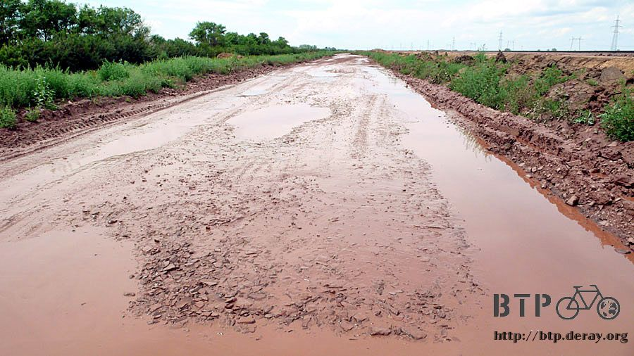

秘密基地
夜裡下了一場雨，早上到處都濕答答的，包含空氣吸起來也是飽含了水分，彷彿魚可以直接在空中游泳。
從吧台值夜班的人那裡吃了早餐，兩杯咖啡、兩個三角肉餅和兩顆荷包蛋。
吃飽後就準備出發吧，昨天善變的風勢今天收斂很多，不再狂風四起，而是輕輕柔柔的，向深海的潮流般滑動。
出發後約一個小時，從霧色中浮現城市的影子，有一棟建築物大得很明顯，看起來這邊比一般的村落要發達一些。
雖然沒有任何的依據，但感覺這裡可能會有網路可以使用，所以就離開馬路繞進這個不知名的地方。
進到城裡才發現那一棟大建築物不過就是一般的工廠罷了，而城裡跟其它地方看起來也沒兩樣，並不是多繁榮的地方。
網路的期盼似乎落空，多繞了一小段路是無傷大雅，準備離開這裡繼續往下騎。
等等，現在是怎樣？這樣看起來很不合邏輯。
自以為這邊會有網路，所以就繞進來看。
然後又自以為這邊不怎麼發達，所以又準備要離開。
從頭到尾都是我一個人的假設，一點驗證的行動也沒有，實在太欠缺信服力。
於是在離開之前，我問了離我距離最近的卡車司機大叔，『請問一下～這邊有網路可以用嗎？』
發問完我就在心裡替對方做了回答，『沒有』、『不知道』，然後真的可以離開這邊了。
但司機大叔的回答讓我嚇一跳，這裡居然真的有網路可以用，而且很明確的跟我說就在前面那一棟建築物裡頭。
看著眼前的建築物，門口立著禁止進入的牌子，又掛著鐵鍊，這邊真的會有網路嗎？
牽車繞過欄杆，建築物門口掛著的並不是網路的招牌，而像是某個公家機關之類的。
說明來意之後裡面的人熱情的招待我進去，並請了懂電腦的人幫我找了一個空的座位，將電腦接上電話線。
好懷念的數據機撥接上網，速度雖然慢了一點，但確實是可以連上網路。
搞定了網路的問題之後，他才去忙自己的事情，而且沒有跟我收費，隨便我使用。
除了在這個神奇的機關上網之外，一個小時之後，裡面的媽媽員工們又邀請我在這裡共進下午茶。
豐盛的茶點、餅乾、火腿、蛋糕，配上一杯又一杯的熱紅茶，大方的吃了很多，把這一頓當成午餐解決掉。
早上就在這邊又有得吃又有得喝，消磨愉快的時光，接近中午的時候才離開。
招待我的媽媽上班族，和幫我連上網路的工程師，多謝你們！
今天有一個路口很重要，在這裡記得一定要左轉，往科斯塔奈的方向騎，若是傻傻的直直走，那又不知道要迷路到什麼地方去了。
轉了彎之後，路面上堆起了小土堆，掛著施工中請繞道的牌子。
這條便道真是爛得令人吒舌，根本就是開給坦克車走的，而且整條馬路一封閉就是整整十公里，
這十公里都走在亂七八糟的路面上，昨天又下過雨的關係，路面整個泥濘到很誇張。
想下車用牽的也沒辦法，很難走路，只好慢慢的騎車經過，汽車開過的時候，爛泥巴飛濺，想閃都來不及。
我也不想因為閃泥巴而整個人摔進爛泥巴堆裡面。

這條十公里的便道，騎了一個半小時才撐完，得以離開便道回到路面上。
本來要是騎在這樣的路面上，我一定會幹譙到沒力，說這是什麼爛路，但經過剛才的便道之後，這條路真的算很不錯了。
一離開施工路段，出現一間小店，開設在這邊簡直是黃金地段，所有離開施工路段的車輛，通通都到這邊報到。
喝杯飲料、吃點東西，店裡熱鬧的快要擠不進去。
我將小多的背包全部卸下來放在店旁的車子上，然後開始清理小多身上的泥土。
飛濺的泥巴沾得到處都是，很多都已經乾掉結塊黏在車身上，用手指一塊一塊的清理掉。
輪胎和擋泥板通通附著上了厚厚的一層泥巴，推著小多去路邊積水區來回的清洗，費了一番工夫才讓車子恢復乾淨。
卸包包時發現少了一個水壺，一定是剛才在便道給震掉了，這樣可以攜帶的水量就少了700CC，得找一個寶特瓶來替代才行。
整備完也吃了馬鈴薯泥的麵包，接著往下走吧。
希望剛才的施工已經結束，讓路面保持這樣的水準就好，我的要求已經降低很多了。
往前騎不到多遠，又出現了封路的告示牌，和跟剛才一樣爛的便道，整個人很無力，車子才剛整理好，又要騎進髒兮兮的泥巴裡。
真正讓我擔心的是輪胎鋼絲的情況，路面凹凸不平，每一次的震動都讓我捏一把冷汗。
在爛路裡掙扎的騎了一小段，有點生氣哈薩克的道路施工品質，旁邊正在修建馬路的工人看到我，輕鳴喇叭跟我打招呼。
轉頭看了他們一眼，意思意思揮手表示禮貌，心裡則有點不爽。
工人們看到我有回應，接著就招手叫我過去，並且讓我走在這一條全新鋪設的柏油路上。
終於可以擺脫爛路的折磨，很開心的騎在新路，柏油還沒鋪設完畢，地面有點黏黏的，但還過得去，也多謝那些工人給我方便。
回到正常的路沒多久，有輛小轎車停在路邊等我，揮手叫我停下來，聊了幾句話，然後居然拿了一張五百元給我。
我推辭著說不用不用，身上的錢還夠花，但是這個大叔就一直把錢塞過來，說這沒多少錢，讓我吃頓好料的補充營養。
盛情難卻之下我還是收下了這張五百元。
今天的目的地有點遠，又在爛路花了很多時間，看來不到天黑是騎不到，所以就不打算騎到那裡去。
只要眼前一出現加油站、商店、餐廳等任何一間，我就停下來補給，然後就地露營，這是心裡的打算。
只是計劃老是和實際的情況不一樣，這一路上硬是什麼都沒有，若非必要真不想睡在荒郊野外，反正天色還亮，雖然疲憊但是再多騎一會吧。
騎到快沒力的時候，太陽也漸漸下山，這時候已經超過晚上九點了。
路面第三次出現施工中，請繞道的牌子，想到要在黑壓壓的天色騎著爛路就覺得很辛苦，所以今天不玩了，到此收工。
旁邊是沿著鐵軌建設的小鎮，雖然是沿著鐵軌建設，但是並沒有任何的月台或是火車站。
鎮上很小，一眼就能看完，傳統的鄉下建築物，雞、羊、牛自由的漫步著，狗吠聲不時響起。
入鎮後沒見到幾個人，向嬉戲的孩子問這裡有沒有商店，這是我最低需求的渴望，只要商店就可以了。
但是連商店也沒有，哇哈哈～所有的期待全部落空。
那還是得找個落腳的地方，眼睛望去有兩個選擇，一個是看起來很大很大的廢棄空屋，窗戶全部破光光，連門都沒有，裡面堆積著垃圾。
另一個則是鐵軌旁的小屋，看起來很新，透過窗戶看裡頭則是整齊乾淨，想必是有人在管理，但目前管理的人不在。
這兩個選擇我挑了後者，將小多牽到鐵路旁的小屋靠著欄杆放，小屋的門是鎖著的，所以今天可能就要睡在小屋外頭。
剛換上拖鞋，準備輕鬆一下的時候，鎮上的小孩們口耳相傳說我的到來，通通聚集了過來。
本來空蕩蕩的小屋，瞬間變得熱鬧無比。
一切從一輛有著動力方向盤和真皮座椅的腳踏車開始，這是孩子王的座騎。
孩子王叫做魯斯坦，不管年歲和國家的隔閡，完全把我當兄弟看。
想不到這個看起來不大的鎮上，居然隱藏了這麼多的小孩，被小孩團團包圍住的感覺還挺不錯的。
大家看起來都很可愛，我將背包裡能分送的零食通通拿給大家。
兩條前天剛買草莓蛋糕、巧克力豆、餅乾、焦糖巧克力棒、水果糖...
一群小孩不會看到我在分東西而爭先恐後的來搶，而是靜靜的看著我，看我把東西拿到他的面前，才不好意思的收下來，有禮貌的道謝。
除了香腸是豬肉做的，怕讓小孩誤食禁忌食物，以及一包很難吃的花生米，其它的零食全部發光光了。
我的晚餐只剩下兩片口香糖充飢，看到這些小孩抱著蛋糕的開心表情，餓一晚上肚子不算什麼。
對我來說這些只是用錢就能夠輕鬆容易買到的零食，但是在這個連商店都沒有的小鎮，一條蛋糕可以是一個小孩一整年最大的禮物。
他們一定不會像我那樣狼吞虎嚥的吃完，而是仔細品味這得來不易的糕點，開心的吃吧～
這棟小屋同時也是這些孩子們的秘密基地，十來歲，看起來年紀比較大的孩子，都躲在這裡抽菸。
我問他們吃飽了沒？他們說抽菸比吃飯重要，人小鬼大的他們，輕而易舉的找到小屋的鑰匙，並且將門給打開。
我指著裡面，說我今晚可以睡在裡頭嗎？所有人無異議的點頭通過。
牽著小多進去，卸下包包，今天又找到屋頂了，比睡在外頭還好。
屋外的小孩圍著窗戶看著在裡面的我，莫名的包圍感呀～好加在不是被殭屍給包圍。

有的孩子回家提了一大桶的清水給我盥洗和飲用、有的孩子回家泡了一大杯，金魚缸大小的熱茶給我喝。
更有小孩拉著我的衣袖說今天去睡他們家，我開玩笑的說你們帶流浪的人回家，爸爸媽媽看到可能會殺了我^^"
多虧這些小孩援助的物資，讓我可以舒服的擦個澡。
小小的屋子裡擠滿了小孩，大家圍著電腦看照片。
我問大家想看哪邊的照片呀？是中國呢～還是哈薩克的大城市？
猜怎麼著？大家最想看的是這個小鎮的照片。
明明從屋裡出去，就可以看到的景色，從我的電腦裡播出來，讓他們歡天喜地，好像這個小鎮透過照片看，跟透過眼睛看是不一樣的地方。
看完了小鎮的照片，接著才是對哈薩克的大城市感到興趣，首都、靠湖的城市，這些都是他們只聽過，這輩子可能也不會去的地方。
然後就是中國的異國風情、食物和人文，每個小孩的眼睛都看得發亮。
突然聽到有小孩說『有大人來了～！』
跟這些小孩相處久了，感覺自己又回到童年，聽到這句話連我自己都跟著緊張起來，心裡想著是不是要落跑。
明明我自己也是大人呀～再說我要跑去哪裡？@@"
幸虧只是風聲，大人並沒有真的來。
看照片到十二點多，終於有人開始打哈欠表示要回去睡覺了，我自己早就睏到不行，但是又捨不得趕走這些小孩。
小孩走之後，我在地上鋪上睡墊和帳篷，準備好好的睡它一覺。
要是今天就這樣劃下句點不知該有多好。
凌晨三點半，正在做著好夢的我被開門的聲音和刺眼的燈光驚醒。
這一次，大人真的來了。
大約是三十五歲的中年男子，瘦瘦矮矮的，渾身飄著酒氣，指著我問，『你在這邊幹嘛？』
即使說明了自己的身分和表明只在這邊睡一晚上，天一亮我就走，他還是很無情的說『現在立刻離開。』
跟喝醉的人非常難以溝通，但有一件事情很明顯，他醉得不是很嚴重。
又補充了一句，想留在這邊睡也行，接著舉起他的右手，大拇指和中指搓揉著，有錢就好辦事。
並不是沒有錢，但是連一塊我都不願意給他。
叼著一根菸的他，摸著身上的口袋找不到火柴，可能是喝醉的時候不知弄丟去哪了。
我拿出之前商店因為沒有零錢，當成找零給我的一盒火柴交給他，想不到一盒火柴就軟化了他的敵意。
我繼續收拾睡袋，表示沒有錢，別打我的主意，撈錢的期盼落空之後，他就輕輕的拍著我的肩膀。
『算了，剛剛的事當我沒講，今晚你就睡在這裡吧。』
阿？真的假的？剛剛才說要我立刻離開，現在又說我可以睡這裡，心裡覺得他會不會在耍我，等會又要叫我走。
但是他點燃香菸，自己開門就離開小屋，一點也沒有要糾纏我的意思。
大人來了真是一件會讓人緊張的事情，還好大人曾經也當過小孩。
繼續閱讀：7.13 溼答答
哈薩克-堅戈－ 1：0.26 台幣
7.12 |
總計：580元 |
早餐咖啡、三角肉餅、荷包蛋330元、紅茶、馬鈴薯麵包、可樂250元 |
|